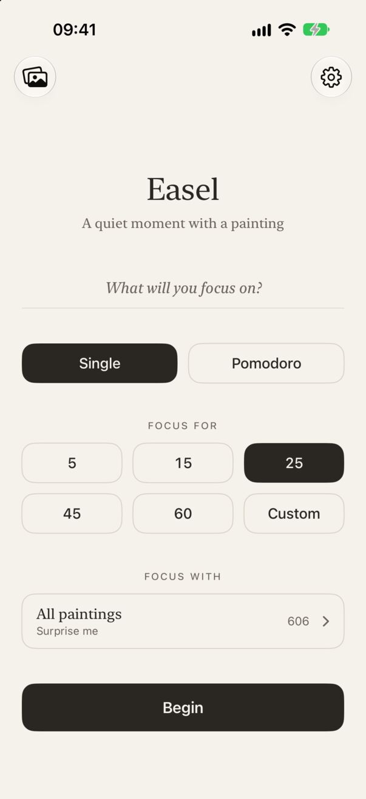

主界面
一切都从一个安静的界面开始。从上到下依次是：
- 画廊（左上角）：你揭开过的画作。
- 设置（右上角）：外观、声音、提醒、小组件的每日目标等。
- 你要专注于什么？可选填写的一行，写下你正在做的事。
- 单次或番茄钟：一次专注，或四段专注加短暂休息。
- 专注时长：5、15、25、45 或 60 分钟，或选自定义，5 到 120 分钟任选。
- 陪伴画作：从哪些画作中挑选。全部画作会给你惊喜。
- 开始。


你的第一次专注
- 选择时长。25 分钟是个不错的开始。轻点自定义，可以在滚轮上选择 5 到 120 分钟的任意时长。
- 写下要做什么（可选）。在顶部那一行输入，或者留空，轻点“开始”时 Easel 会问你“你要专注于什么？”。参见专注提问。
- 轻点“开始”。Easel 挑选一幅画，并在专注开始前完整加载，所以揭示过程从不需要等待网络。
- 工作。随着时间流逝，画作从中心向外渐渐清晰。计时器安静地待在顶部，你不必盯着它。
- 到 0:00，画作完全揭开。底部升起一张米色博物馆展签，写着你专注了多久、为了什么，以及作品名、艺术家和年代。轻点完成，它就会挂进你的画廊。


接下来去哪儿
在应用里迷路了？
Easel 的每个界面都有返回的路：左上角的 ‹ 返回按钮、统计界面的 ⌄，或在弹出面板上向下轻扫。你总能回到主界面。详见疑难解答。